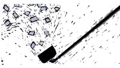

Through the years we've all discovered a few practical, time-tested solutions to the frustrating little problems of everyday life. Why not share your best ideas with the rest ofMOTHER'sreaders? Send your suggestions to Country Lore,Mother Earth News, P.O.Box 70, Hendersonville, NC 28793. A one year subscription-or a one-year extension of an existing subscription (please include your mailing label)-will be sent to each contributor whose tip is printed in this column.
Each year when I get out the yard furniture for the summer, I load it all in my pickup and take it to a do-it-yourself car wash. For a handful of quarters and just a few minutes time, my furniture is scrubbed and rinsed and ready to use.
-Irma F. Wilson
Seminole, Oklahoma
Baby Those Blades Because razor blades rust out before they wear out, I protect each one as it's used by immersing it in baby oil between shaves. Now a blade lasts a month instead of three or four days, and I'm never nicked or scratched either.
-Mike Sutton
Des Moines, Iowa
Rise and Shine I love to bake bread, and I've found an easy, foolproof way to assure that the dough rises quickly. I grease the inside of my electric slow cooker, turn the heat on low and let the pot warm. Then I turn it off, put in the dough and cover the pot. This really works like a charm.
-Cathy Flemens
Silsbee, Texas
Sure Cure I'd like to share a homemade remedy that immediately relieves and soon cures psoriasis. Mix one part iodine (not the white kind) with four parts castor oil, shake well and apply daily with cotton to any affected skin. I'm a retired cosmetologist, and every person-without exception-who has tried this since 1935 has been helped.
-Elizabeth S. Ehinger
Lompoc, California
For more than 18 years I led and counseled Boy Scouts. Whenever I took them camping, I always carried waxed dental floss, a large darning needle and green iron-on jeans patches. The floss is stronger than any thread for stitching rips in backpacks, reattaching stake loops, and other repairs. And when a tent springs a leak, a hot rock will suffice to make a patch adhere. For a handy source of small amounts of water, take a large plastic milk jug, punch a small hole near the bottom, fill the jug with water, cap it tightly and hang it from a tree. No water will come out until you give the jug a bump?
-Robert H. Sattler
Osgood, Indiana
Emergency! I was 30 miles from the nearest town, it was way below zero outside, my toilet backed up and I had no plunger. What to do? I took an empty two-liter soft-drink bottle and cut the neck off so the opening was about three inches across. Holding the bottle upsidedown, I pressed it firmly against the bottom of the toilet bowl and gave a big squeeze. It worked. The air pressure unclogged the toilet on the first try.
-Roy J. Elfrink
Columbia, Missouri
The best way to remove burnt-on, crusty food deposits from around the top edge of a pan is to soak it in hot, sudsy water. But what if the pan is a roaster or something else too large to fit in the sink? Instead of scrubbing for hours with a steel-wool pad, I simply fill the pot almost to the brim with hot water, add dish detergent, and then drape paper toweling over the rim so that one edge of the toweling touches the water. The absorbent paper wicks up the water, keeping the pot's rim moist. In 20 minutes or less the crusted food has softened and is easily wiped off with the same wet toweling.
-Judith C. Protas
New York, New York
Hoe That Wall I've found there's no better scraper for peeling paint than a garden hoe. Two hands on the handle make for less strenuous work; you can reach high places easily and can scrape low spots without bending.
-Erwin Kokoschke
Morristown, Minnesota
Save Those Sheets How many times has this happened? You're working on your car's motor and you drop a nut or bolt or whatever. Once it hits the dirt or grass it's instantly gobbled up by an invisible "grinch." Really frustrating! The solution is to place an old sheet under the motor while you work, so anything dropped can be instantly spotted and retrieved.
-Rod MacDonald
Lebanon, Missouri
When freshly painted surfaces won't dry past the tacky stage, apply a small amount of talcum powder with a rag. All traces of stickiness will instantly and permanently be gone. I've found this also works when some of the newer types of glue, including epoxies, remain sticky.
-Hugo I. "Doc" Wiener
Cabazon, California
Deadly Sweet Peanut butter may attract mice to a mousetrap, but its much too easy for the little pests to nibble away at this treat and never spring the trap. Not so with Tootsie Rolls. Mice have a real sweet tooth, but with this candy as bait they'll be lucky to even get a taste before they're terminated!
-Harold Titkemeier
Pemberville, Ohio
Ways With Wood You've had some good ideas in this column on what to do with loose screws. My favorite solution is to take out the screw and fill the hole with a mixture of glue and sawdust. Replace the screw and let the glue set; you'll have a solid fastening that won't pull out. I also use the glue-sawdust mix when I refinish furniture. I add a bit of stain the same color as the wood, fill all the nail holes and cracks, let the mix dry and then sand each repair until smooth. When the restoration is complete, I can't even find the damage I've covered up.
-Joanna Briggs
Republic, Ohio
Tote That Tool Keep long-handled tools, such as shovels and rakes, from bouncing out of your wheelbar row by carrying them across the handles, wedged into the niche where the handles join the tub. This way you can dump loads straight forward without losing the tools. A safety tip: If there are munchkins playing nearby, protect them from your pitchfork by sticking it upright into the ground whenever it's not in use.
-Whit Kirkland
Byron, Georgia
The Colapot A can of cola boiled in your coffeepot or run through the automatic brewing cycle will clean out the pot and remove stains.
-Donna Smith
Clarion, Iowa
No More Tears My grandchildren come to me with their splinters and embedded thorns, as I have an easy, painless way to remove them. A little hydrogen peroxide "boils" the sliver out till it can be pulled or tweezed.
-Louise M. Totaro
Goose Creek, South Carolina
Born-Again Blender After many years of use (though I cleaned it often), my blender's blade assembly became so gummy and stiff that it finally refused to turn. My bright idea was to boil the blades for a few minutes in vinegar, and now my blender works like new.
-Mike Javorski
Minnetonka, Minnesota
|
|
|
 |
|
|
|
|